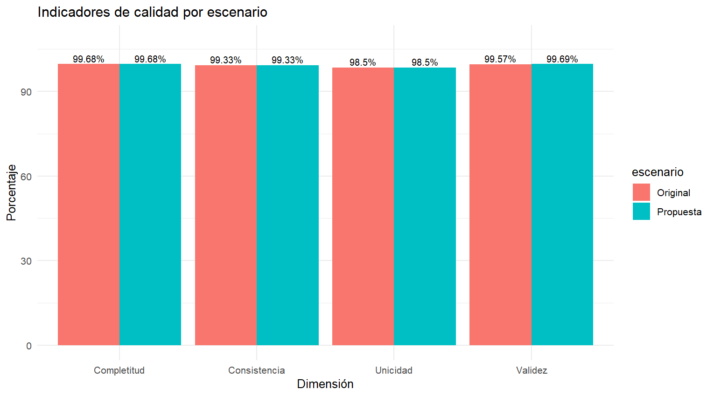
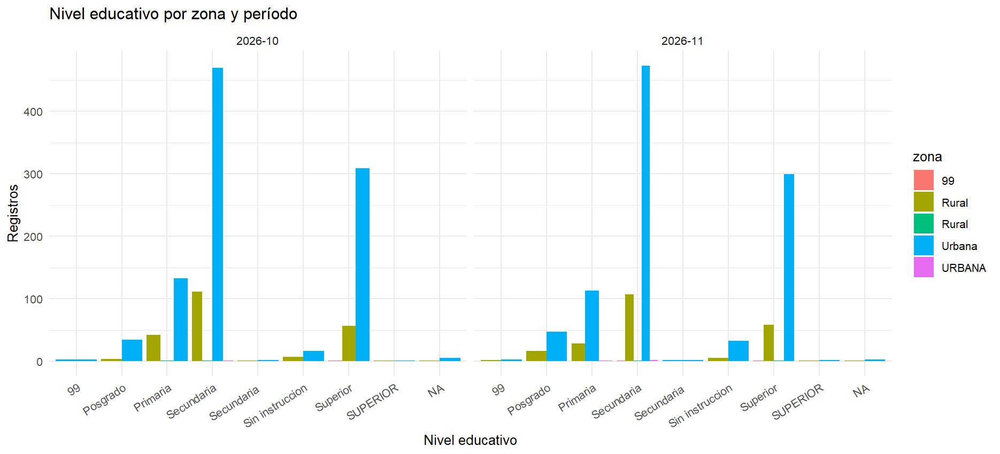
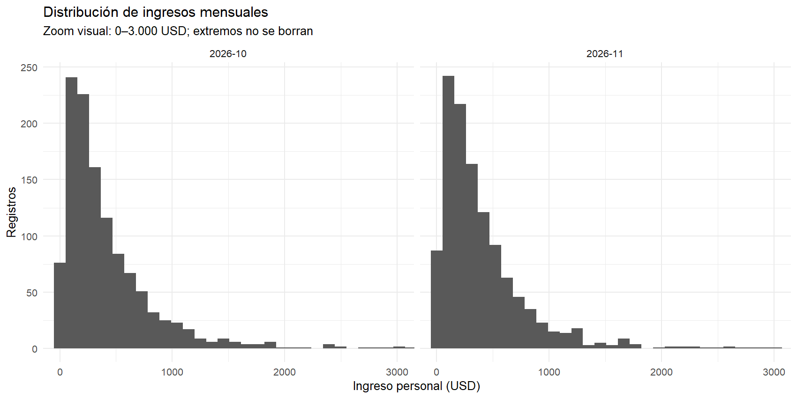
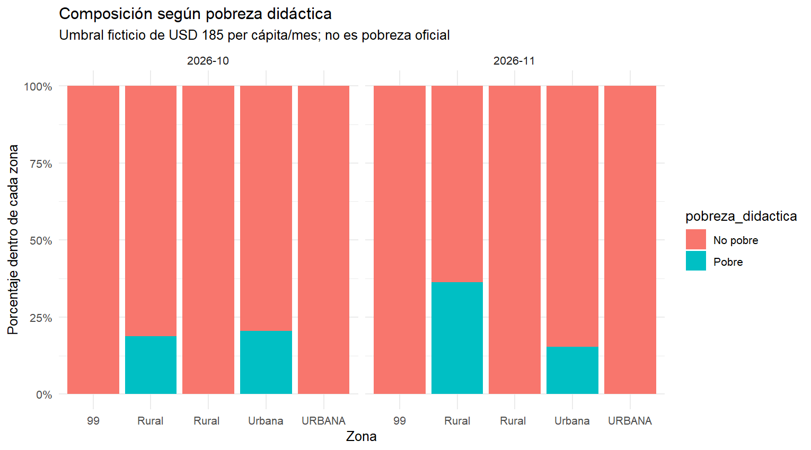
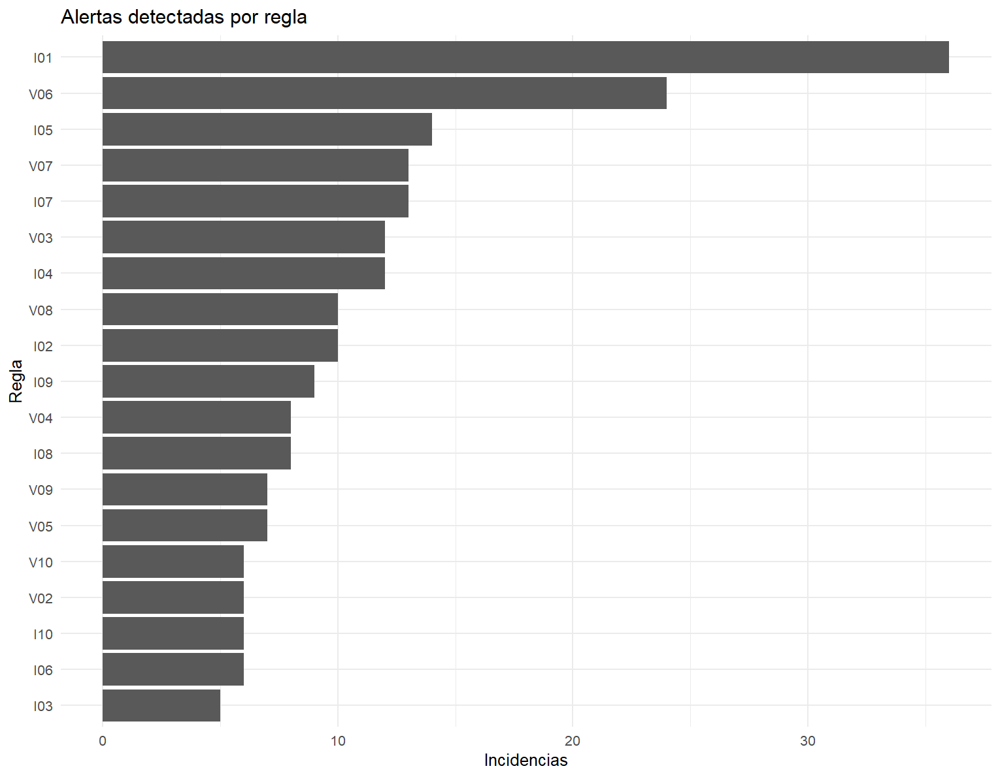

| indicador | numerador | denominador | porcentaje | escenario |
|---|---|---|---|---|
| Completitud | 14354 | 14400 | 99.68 | Original |
| Validez | 11903 | 11954 | 99.57 | Original |
| Unicidad | 2364 | 2400 | 98.50 | Original |
| Consistencia | 4762 | 4794 | 99.33 | Original |
| Completitud | 14354 | 14400 | 99.68 | Propuesta |
| Validez | 11917 | 11954 | 99.69 | Propuesta |
| Unicidad | 2364 | 2400 | 98.50 | Propuesta |
| Consistencia | 4762 | 4794 | 99.33 | Propuesta |
Informe técnico de calidad de datos
Encuesta socioeconómica sintética 2026 — práctica integradora
1. Introducción
Este informe presenta resultados de un conjunto completamente sintético para practicar la evaluación de archivos de datos. No contiene cifras reales del INEC y su distribución muestral fue desbalanceada deliberadamente.
2. Objetivos
- Identificar ausencias, formatos no válidos y relaciones incoherentes.
- Mostrar indicadores con numeradores y denominadores verificables.
- Comparar los períodos octubre y noviembre de 2026 y escenarios original/propuesta.
- Documentar limitaciones antes de difundir resultados.
3. Metodología y procedencia
El conjunto contiene 2400 registros de encuestas. Los controles se construyeron en scripts R independientes y se consolidaron en un archivo RDS. La etiqueta pobreza didáctica corresponde únicamente al umbral ilustrativo de USD 185 por persona y mes. No constituye una medición oficial.
La propuesta de normalización permanece en estado: PROPUESTAS NO APROBADAS.
4. Indicadores de calidad

5. Comparación entre períodos
| indicador | numerador | denominador | porcentaje | periodo | escenario |
|---|---|---|---|---|---|
| Completitud | 7175 | 7200 | 99.65 | 2026-10 | Original |
| Validez | 5955 | 5975 | 99.67 | 2026-10 | Original |
| Unicidad | 1182 | 1200 | 98.50 | 2026-10 | Original |
| Consistencia | 2386 | 2396 | 99.58 | 2026-10 | Original |
| Completitud | 7179 | 7200 | 99.71 | 2026-11 | Original |
| Validez | 5948 | 5979 | 99.48 | 2026-11 | Original |
| Unicidad | 1182 | 1200 | 98.50 | 2026-11 | Original |
| Consistencia | 2376 | 2398 | 99.08 | 2026-11 | Original |
| Completitud | 7175 | 7200 | 99.65 | 2026-10 | Propuesta |
| Validez | 5961 | 5975 | 99.77 | 2026-10 | Propuesta |
| Unicidad | 1182 | 1200 | 98.50 | 2026-10 | Propuesta |
| Consistencia | 2386 | 2396 | 99.58 | 2026-10 | Propuesta |
| Completitud | 7179 | 7200 | 99.71 | 2026-11 | Propuesta |
| Validez | 5956 | 5979 | 99.62 | 2026-11 | Propuesta |
| Unicidad | 1182 | 1200 | 98.50 | 2026-11 | Propuesta |
| Consistencia | 2376 | 2398 | 99.08 | 2026-11 | Propuesta |
6. Educación y zonas

7. Ingresos y pobreza didáctica
| periodo_referencia | zona | registros | datos_validos | media | mediana |
|---|---|---|---|---|---|
| 2026-10 | 99 | 1 | 1 | 318.40 | 318.40 |
| 2026-10 | Rural | 224 | 219 | 452.71 | 310.56 |
| 2026-10 | Rural | 2 | 2 | 382.72 | 382.72 |
| 2026-10 | URBANA | 1 | 1 | 713.53 | 713.53 |
| 2026-10 | Urbana | 972 | 960 | 426.47 | 279.36 |
| 2026-11 | 99 | 2 | 2 | 376.74 | 376.74 |
| 2026-11 | Rural | 218 | 214 | 344.17 | 235.93 |
| 2026-11 | Rural | 2 | 2 | 202.98 | 202.98 |
| 2026-11 | URBANA | 3 | 3 | 141.38 | 139.71 |
| 2026-11 | Urbana | 975 | 957 | 423.60 | 305.91 |


8. Alertas y propuestas de normalización
| regla_id | severidad | incidencias |
|---|---|---|
| I01 | REVISAR | 36 |
| V06 | REVISAR | 24 |
| I05 | REVISAR | 14 |
| I07 | REVISAR | 13 |
| V07 | REVISAR | 13 |
| I04 | REVISAR | 12 |
| V03 | REVISAR | 12 |
| I02 | REVISAR | 10 |
| V08 | REVISAR | 10 |
| I09 | REVISAR | 9 |
| I08 | REVISAR | 8 |
| V04 | REVISAR | 8 |
| V05 | REVISAR | 7 |
| V09 | REVISAR | 7 |
| I06 | REVISAR | 6 |

Se registraron 28 propuestas de normalización, no autorizadas. La imputación estadística se examinó únicamente como escenario didáctico y no altera la base original.
9. Interpretación y limitaciones
La composición educativa y territorial del conjunto fue creada de forma desbalanceada; los resultados representan solo esta simulación. Las diferencias entre períodos no pueden interpretarse como tendencias poblacionales, ni los cambios entre escenario original/propuesta como mejoras oficiales sin validar su metodología y aprobación.
10. Conclusiones
El proceso de importación, perfilado, validación, integración y tabulación permitió producir resultados reproducibles. Antes de comunicar estos resultados, se deben inspeccionar las reglas, los denominadores, las incidencias y la bitácora de decisiones.
11. Referencias y documentación
Anexo.
O. Actividad de interpretación
¿Por qué un dataset con pocas ausencias todavía puede tener problemas de validez, unicidad e integridad?
Porque la ausencia de datos es solamente una dimensión de la calidad. Un campo puede estar diligenciado y, aun así, contener un formato inválido, un valor fuera de rango o una categoría que no pertenece al catálogo. Asimismo, pueden existir identificadores repetidos, referencias sin correspondencia entre tablas o relaciones lógicas incumplidas.
En este ejercicio, la completitud del escenario original es alta, pero todavía se detectan evaluaciones inválidas, filas involucradas en duplicidades y claves de hogar sin correspondencia. Por tanto, un porcentaje elevado de completitud no demuestra que el dataset sea válido, único, consistente o íntegro. Cada dimensión requiere reglas y denominadores propios.
¿Cómo distinguirá una fila repetida de dos personas con un mismo identificador?
La repetición de
id_personadentro de un período es una señal de revisión, pero no demuestra por sí sola que las filas sean exactamente iguales. Para distinguir ambos casos se debe comparar el contenido completo de los registros:id_encuesta,id_hogar, características personales, ingresos, fecha de entrevista y demás variables disponibles.Una fila repetida presentaría los mismos valores que otra observación y podría corresponder a una duplicación durante el procesamiento. En cambio, dos registros con el mismo
id_persona, pero conid_encuestau otros atributos diferentes, podrían representar respuestas distintas afectadas por una asignación incorrecta del identificador. También debe conservarse la referencia afila_csvpara localizar las observaciones en la fuente.En este taller, el indicador de unicidad contabiliza las filas que participan en una clave repetida, no solamente las copias exactas ni únicamente la segunda aparición. Ninguna fila debe eliminarse sin revisar su procedencia.
¿Qué significa un
id_hogarsin correspondencia, y por qué no debemos eliminarlo sin investigación?Significa que una persona declara un identificador de hogar que no aparece en la tabla maestra para la combinación de
id_hogaryperiodo_referencia. Esta situación se denomina clave huérfana o referencia sin correspondencia.Puede deberse a un error de digitación, una diferencia de período, una omisión en la tabla maestra o un problema durante la vinculación de los archivos. No implica necesariamente que la persona o su respuesta sean inválidas.
Eliminar el registro sin investigar produciría pérdida de información, reduciría la trazabilidad y podría introducir sesgos en los resultados. Lo correcto es conservar la observación, registrar la alerta y verificar la clave en las fuentes correspondientes. Una clave ausente también debe tratarse por separado de una clave presente que no tiene correspondencia.
¿Qué diferencia existe entre media y mediana ante un ingreso extremo alto?
La media aritmética se calcula sumando todos los valores y dividiendo el resultado entre el número de observaciones. Como utiliza directamente la magnitud de cada valor, es sensible a ingresos extremadamente altos.
La mediana es el valor central de una serie ordenada. Su posición depende principalmente del orden de las observaciones, por lo que suele ser más robusta frente a valores extremos.
Por ejemplo, para los ingresos
100, 300, 500 y 9000, la media es2475, mientras que la mediana es400. El ingreso de 9000 eleva considerablemente la media, pero apenas modifica la posición central utilizada por la mediana. Sin embargo, que un valor sea extremo no demuestra que sea un error: puede ser una observación válida que requiere revisión contextual.¿Cuál es la diferencia entre corrección propuesta y corrección aprobada?
Una corrección propuesta es una modificación sugerida después de detectar una incidencia y aplicar una regla documentada. Se registra en la bitácora con su identificador, valor original, valor propuesto, regla, estado, responsable y fecha, pero todavía no ha sido validada ni autorizada.
Una corrección aprobada es una propuesta que ha sido revisada y autorizada por el responsable correspondiente, siguiendo un criterio metodológico definido. Su aplicación debe conservar evidencia de la decisión y permitir comparar el resultado con la fuente original.
En este ejercicio, las normalizaciones permanecen como propuestas pendientes de autorización. El archivo
data_rawno se modifica y la imputación se mantiene en un escenario didáctico separado. Por tanto, no se debe afirmar que la base original fue corregida oficialmente.¿Qué indicador mejoró entre escenario original y propuesta? ¿Es correcto afirmar que mejoró la estadística oficial?
El indicador que mejoró fue la validez. En el escenario original se obtuvo 99.57 %, con 11903 cumplimientos entre 11954 evaluaciones aplicables. En el escenario propuesto alcanzó 99.69 %, con 11917 cumplimientos sobre el mismo denominador.
La diferencia fue de +0.12 puntos porcentuales, porque el numerador aumentó en 14 evaluaciones. Completitud, unicidad y consistencia permanecieron sin cambios.
No es correcto afirmar que mejoró la estadística oficial. Los datos son completamente sintéticos, contienen errores incorporados deliberadamente y las modificaciones son propuestas no aprobadas. El resultado solamente demuestra el efecto de las reglas de normalización aplicadas dentro del ejercicio; no representa una mejora institucional del INEC ni de sus estadísticas.
¿Por qué
saveRDS()es necesario antes de elaborar el reporte Quarto?En este proyecto,
saveRDS()permite consolidar y conservar el paquete de resultados que necesita el informe: metadatos, tablas, alertas, bitácora y rutas de las figuras. A diferencia de un CSV, un archivo RDS puede almacenar una lista completa de objetos de R conservando su estructura y sus tipos de datos.Quarto ejecuta el documento en una sesión de R independiente. Por ello, el informe no debe depender de objetos como
personas,alertasoindicadoresque estén abiertos temporalmente en el entorno de RStudio. MediantereadRDS(), el documento recupera los resultados guardados y puede reproducir sus tablas y cifras desde una sesión nueva.Esta separación entre análisis y comunicación también facilita verificar que el HTML utiliza exactamente los resultados generados por los scripts, sin copiar números manualmente.
¿Qué diferencia práctica existe entre generar un documento HTML y generar un sitio web de dos páginas?
Un documento HTML presenta el contenido en una sola página con una estructura principalmente lineal. En este taller, el informe reúne la introducción, metodología, resultados, gráficos, conclusiones y referencias en
reporte_calidad.html.Un sitio web Quarto organiza varias páginas relacionadas mediante una configuración común y un sistema de navegación. En este caso,
index.qmdpresenta el panel de indicadores ymetodologia.qmdcontiene las definiciones y limitaciones. Al renderizar el proyecto se generan páginas conectadas dentro deweb/_site/.Por tanto, el sitio no es simplemente un informe dividido en dos archivos: incorpora navegación, recursos compartidos y rutas entre páginas. También exige comprobar que los enlaces y las imágenes funcionen correctamente dentro de la carpeta final del sitio.
¿Por qué los resultados desbalanceados no deben extrapolarse a Ecuador?
Porque el conjunto fue construido artificialmente para practicar R y evaluación de calidad. Su distribución territorial y educativa fue desbalanceada deliberadamente y se incorporaron errores con fines didácticos. No procede de un levantamiento real ni de un diseño muestral representativo de la población ecuatoriana.
En consecuencia, las frecuencias y proporciones observadas describen únicamente los registros de la simulación. No cuentan con la representatividad, cobertura, ponderaciones ni controles necesarios para producir estimaciones nacionales.
Extrapolar estos resultados a Ecuador podría generar conclusiones sesgadas o falsas. Tampoco es válido interpretar las diferencias entre octubre y noviembre como tendencias poblacionales o como efectos causales.
¿Por qué la variable
pobreza_didacticano equivale a pobreza monetaria oficial?Porque
pobreza_didacticautiliza una regla simplificada creada exclusivamente para el ejercicio: divide el ingreso mensual del hogar entre el número de miembros y clasifica como Pobre cuando el resultado es menor que USD 185 por persona y mes.Ese umbral es ficticio y no corresponde al método ni al umbral oficial de pobreza del Ecuador. El cálculo no incorpora los ajustes, criterios metodológicos, características del diseño muestral ni demás elementos necesarios para una medición oficial.
La variable sirve únicamente para practicar validación, coherencia entre tablas, tabulación y representación gráfica. Por tanto, sus porcentajes no deben denominarse tasas oficiales de pobreza, compararse con indicadores institucionales ni utilizarse para describir la situación socioeconómica de la población ecuatoriana.